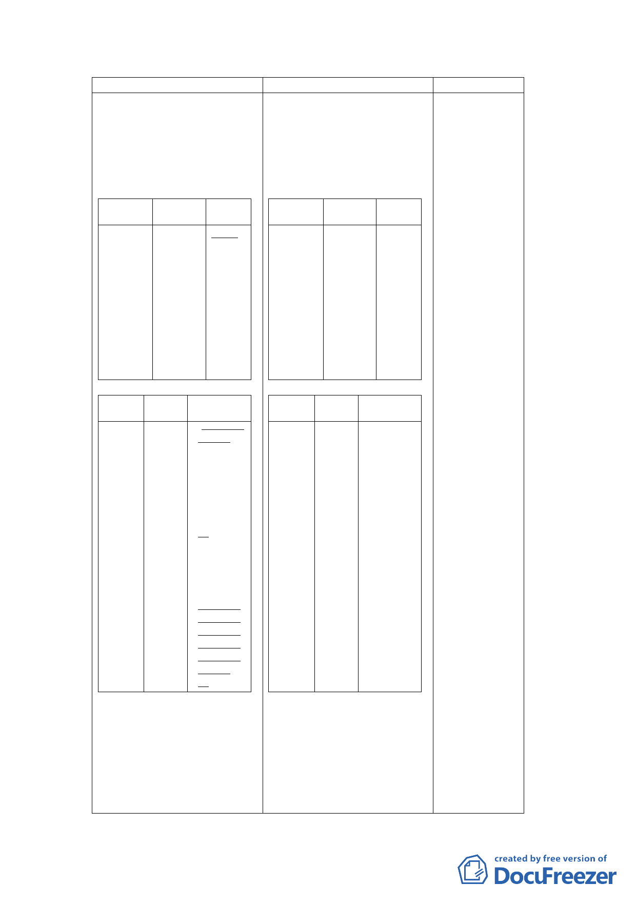

新計畫
肆、計畫內容
一、土地使用計畫及分區管
制
(一)各使用分區之使用性
質、土地及建築物之使用管
制如下表所示：
位置
信義區福
德段二小
段部分
319、
331、
332、部分
361-1、
319-2、
321-1、
322-1、及
部分320
地號
土地使
用分區
社會福
利設施
用地
容積率
400％
位置
信義區
福德段
二小段
部分
320、
333、
342地
號
土地使 使用性質及
用分區 管制內容
第三種 3.福德街派
商業區 出所及捷
（特） 運設施地
上突出物
（出入
口、通風
口等）皆
需整併設
置於商業
區內。
4.不適用開
放空間綜
合設計獎
勵規定及
「臺北市
建築物增
設室內公
用停車空
間鼓勵要
點」規
定。
原計畫
肆、計畫內容
一、土地使用計畫及分區管
制
(一)各使用分區之使用性
質、土地及建築物之使用管
制如下表所示：
位置
信義區福
德段二小
段部分
319、
331、
332、部分
361-1、
319-2、
321-1、
322-1、及
部分320
地號
土地使
用分區
社會福
利設施
用地
容積率
210％
位置
信義區
福德段
二小段
部分
320、
333、
342地
號
土地使 使用性質及
用分區 管制內容
第三種 3.福德街派
商業區 出所及捷
（特） 運設施地
上突出物
（出入
口、通風
口等）皆
需整併設
至於商業
區內。
4.不適用開
放空間綜
合設計獎
勵規定及
「臺北市
建築物增
設室內公
用停車空
間鼓勵要
點」規
定。
說明
1.原廣慈博愛院
為機關用地，
容積率為
400%，於95年
變更時基於地
區公共服務水
準不佳，爰將
全區容積率比
照周邊第三種
住宅區225%為
基準，採容積
調配方式，將
社福用地容積
率訂為210%，
商業區442%，
公園用地
60%。現因本府
為兌現公營住
宅政策，增加
住宅存量，滿
足市民居住需
求，達成公營
住宅興闢效益
及增進公共設
施之利用率，
經本府檢討附
近交通水準情
況及公共設施
負擔下，將社
福用地容積率
提高至400%，
惟全區容積總
量仍不高於95
年都市計畫變
更前之全區容
積率400%。
2.考量商業區開
發時程，及福
德派出所建物
使用年限，故
刪除福德派出
所需整併設置
於商業區內之
規定。後續再
視其實際需求
檢討設置於社
會福利設施用
地或公園用
- 15 -